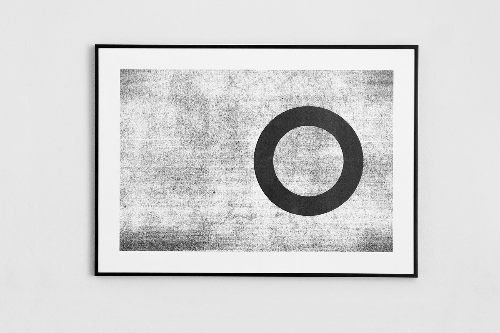
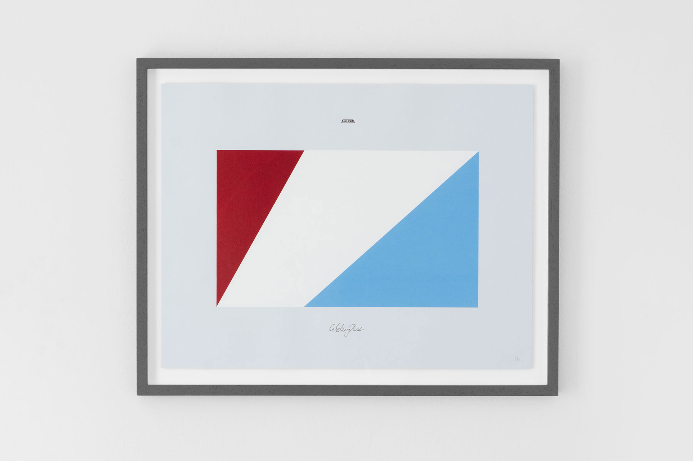
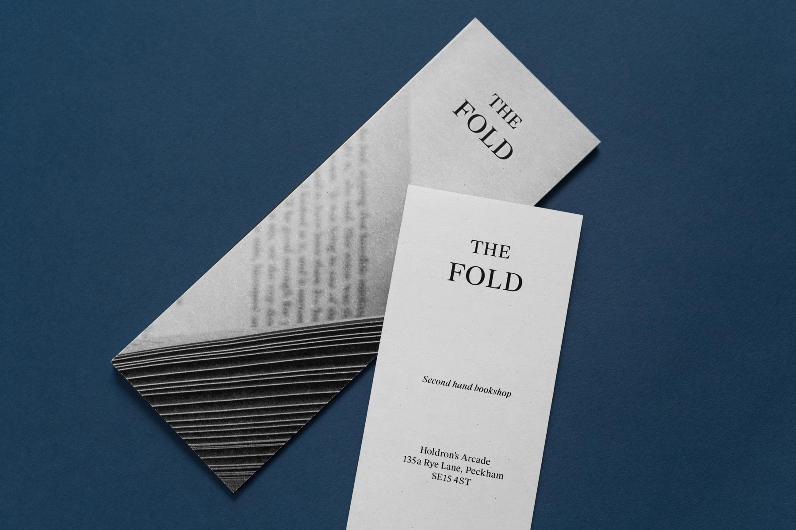

I’m a London-based designer currently working for Hole & Corner Magazine. I have freelanced at It's Nice That, anyways (when it was INT Works) and IDEO, and am a tutor for Ideas Foundation.
I like to begin with ideas allowing concepts and context to suggest a form. I'm especially interested in language, photography and materials; produced forms and their relationship to place and culture. I’m drawn to objects and processes which are intended for communication, but also enjoy how distortion and ambiguity in production can abstract and alter meaning.